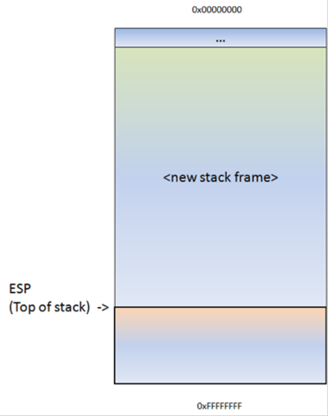

The stack is a piece of the process memory, a data structure that works LIFO (Last in first out). A stack gets allocated by the OS, for each thread (when the thread is created). When the thread ends, the stack is cleared as well. The size of the stack is defined when it gets created and doesn’t change. Combined with LIFO and the fact that it does not require complex management structures/mechanisms to get managed, the stack is pretty fast, but limited in size.
LIFO means that the most recent placed data (result of a PUSH instruction) is the first one that will be removed from the stack again. (by a POP instruction).
When a stack is created, the stack pointer points to the top of the stack ( = the highest address on the stack). As information is pushed onto the stack, this stack pointer decrements (goes to a lower address). So in essence, the stack grows to a lower address.
The stack contains local variables, function calls and other info that does not need to be stored for a larger amount of time. As more data is added to the stack (pushed onto the stack), the stack pointer is decremented and points at a lower address value.
Every time a function is called, the function parameters are pushed onto the stack, as well as the saved values of registers (EBP, EIP). When a function returns, the saved value of EIP is retrieved from the stack and placed back in EIP, so the normal application flow can be resumed.
Let’s use a few lines of simple code to demonstrate the behaviour :
#include
void do_something(char *Buffer)
{
char MyVar[128];
strcpy(MyVar,Buffer);
}
int main (int argc, char **argv)
{
do_something(argv[1]);
}
This applications takes an argument (argv[1] and passes the argument to function do_something(). In that function, the argument is copied into a local variable that has a maximum of 128 bytes. So… if the argument is longer than 127 bytes (+ a null byte to terminate the string), the buffer may get overflown.
When function "do_something(param1)" gets called from inside main(), the following things happen :
A new stack frame will be created, on top of the ‘parent’ stack. The stack pointer (ESP) points to the highest address of the newly created stack. This is the "top of the stack".

Before do_something() is called, a pointer to the argument(s) gets pushed to the stack. In our case, this is a pointer to argv[1].
Next, function do_something is called. The CALL instruction will first put the current instruction pointer onto the stack (so it knows where to return to if the function ends) and will then jump to the function code.
As a result of the push, ESP decrements 4 bytes and now points to a lower address.

Next, the function prolog executes. This basically saves the frame pointer (EBP) onto the stack, so it can be restored as well when the function returns. The instruction to save the frame pointer is "push ebp". ESP is decremented again with 4 bytes.

Following the push ebp, the current stack pointer (ESP) is put in EBP. At that point, both ESP and EBP point at the top of the current stack. From that point on, the stack will usually be referenced by ESP (top of the stack at any time) and EBP (the base pointer of the current stack). This way, the application can reference variables by using an offset to EBP.
So, if you would push 4 bytes to the stack, ESP would decrement with 4 bytes and EBP would still stay where it was. You can then reference these 4 bytes using EBP-0x4.
Next, we can see how stack space for the variable MyVar (128bytes) is declared/allocated. In order to hold the data, some space is allocated on the stack to hold data in this variable… ESP is decremented by a number of bytes. This number of bytes wil most likely be more than 128 bytes, because of an allocation routine determined by the compiler. In the case of Dev-C++, this is 0x98 bytes. So you will see a SUB ESP,0x98 instruction. That way, there will be space available for this variable.
Tip: Most functions start with this sequence : PUSH EBP, followed by MOV EBP,ESP